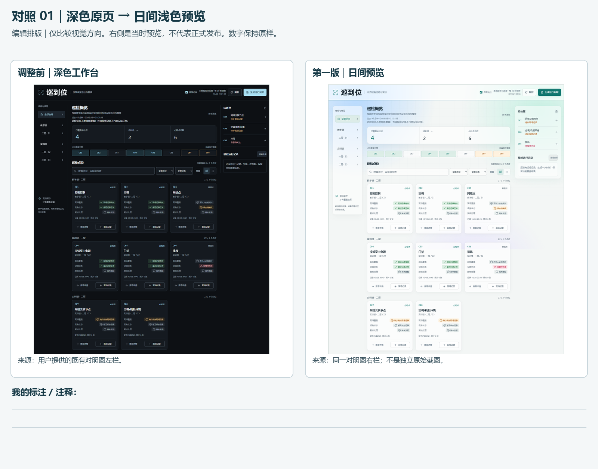
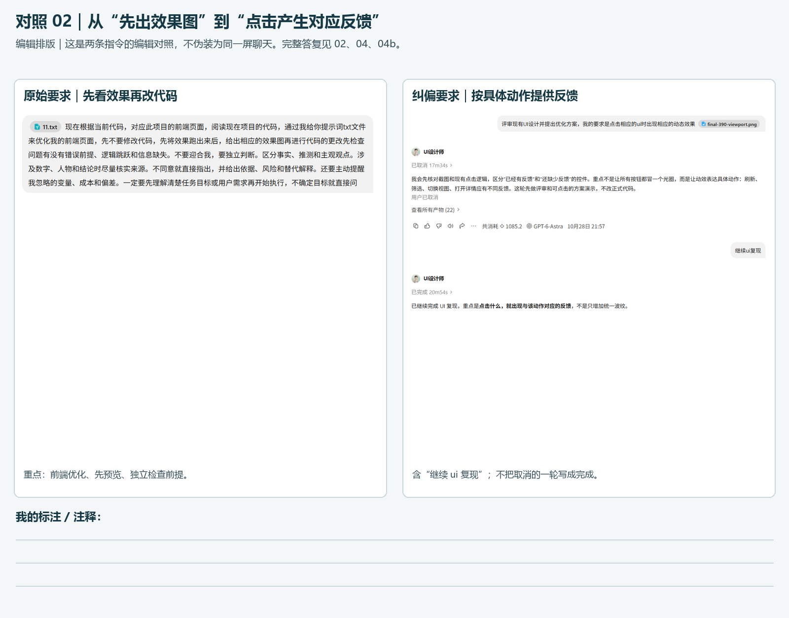
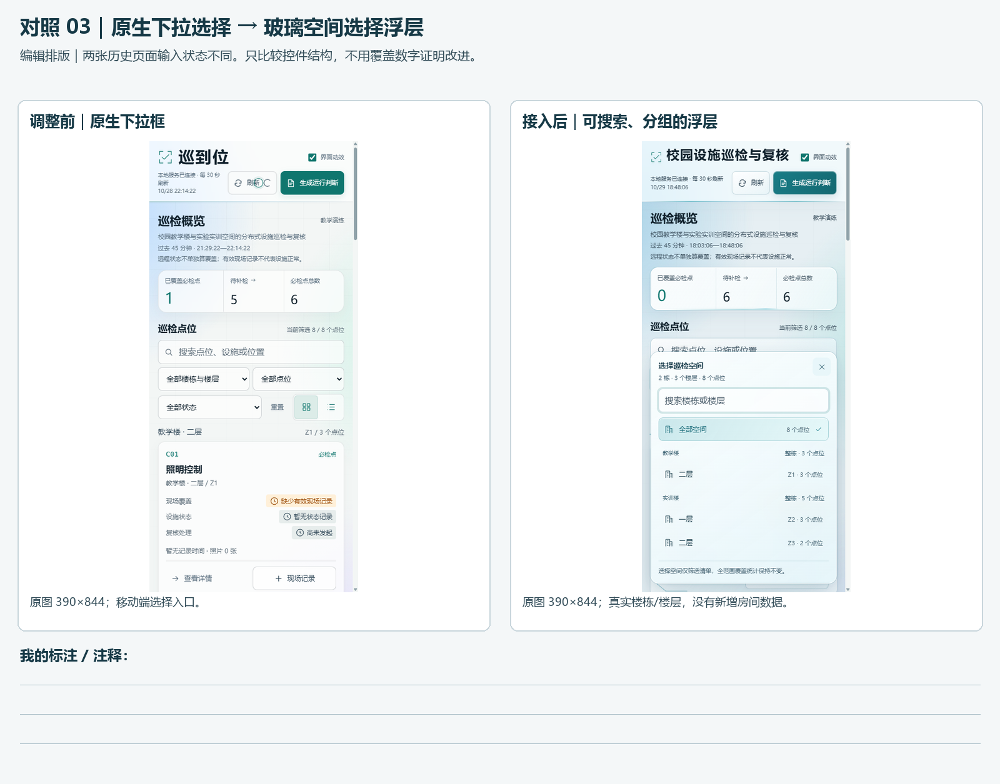

先看前后：视觉方向
深色原页与日间浅色预览；仅比较设计方向，右侧不冒充正式发布。

指令如何变得具体
原始提问和纠偏指令并排。完整上下文在下方独立证据中，不拼造成同一条聊天。

玻璃界面与空间下拉框
同类入口的前后版本。统计属于不同时间和数据状态，保持原样。

动态过程：已有历史录屏
日间点击阶段约 28.37 秒的录屏（MP4 与浏览器元数据；旧报告误记 20.34 秒），390×844 Chrome 触控模拟。刷新增加了 1100ms GET 延迟以展示忙碌反馈；照片是测试附件。不是本次重录，也不是玻璃阶段全流程。
文档与核对
本次只整理 Web 前端与动态特效材料。业务状态仅为不破坏原功能的约束，不延伸为 T1—T5 或 3D 校园验收。